Sliding door installation |
| 1. Body grease application |
The body grease is applied to the rear window regulator LH, the front door -out side handle LH and the power slide -dede -dedicated arock ASSY No.1 LH sliding portion.
| 2. Sliding door Laura Assy LWR LH installation |
Attach the sliding door Lawrola Asy Lwr LH to the sliding door LH with three bolts.
| 3. Sliding door Laura Assy Upr LH installation |
Attach the slide door roller ASSY UPR LH to the sliding door LH with two bolts.
| 4. Sliding door hinge ASSY CTR LH installation |
Attach the sliding door hinge ASSY CTR LH to the sliding door LH with three bolts.
| 5. Sliding door LH installation |
Put the sliding door hinge of the sliding door LH from the back of the vehicle in the slide door Rail CTR LH.
Slide door LH sliding door roller Assy UPR LH is inserted from the slide door rail UPR back cut.
 |
Insert the slide driver Laola ASSY LWR LH from the slide door rail LWR.
| 6. Slide door roux rail plate LH installation |
 |
With one bolt, attach the sliding door Rewer rail plate LH.
| 7. Slide door Appa Rail Cushion LH installation |
| 8. Electric key wire harness installation (with smart keys) |
| 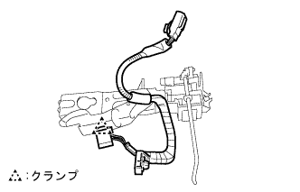 |
Attach the electric key wire harness clamp to the front door out side handle LH.
| 9. Long door -out side handle LH installation |
Apply body grease to the sliding part of the front door outside handle LH.
Assemble the front door outside handle LH to the sliding door panel LH.
Tighten one screw using a torxo wrench (T30).
| 10. Long -door out -side handle ASSY LH installation (no smart key) |
| 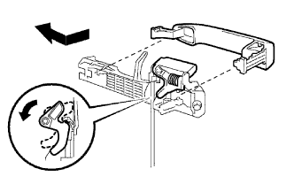 |
Assemble the front door out side handle pad RR and the front door outside handle pad LH.
Lower the Velcank portion of the front door outside handle LH downward.
After inserting the rear part of the vehicle outside handle ASSY LH, insert the front of the vehicle first, slide the vehicle backward by pulling it in front of the vehicle.
| 11. Long -door out -side handle Assisted (with smart keys) |
Assemble the front door out side handle pad RR and the front door outside handle pad LH.
Insert the wire harness of the front door outside handle ASSY LH into the sliding door LH.
Lower the Velcank portion of the front door outside handle LH downward.
After inserting the rear part of the vehicle outside handle ASSY LH, insert the front of the vehicle first, slide the vehicle backward by pulling it in front of the vehicle.
Connect the connector.
| 12. Front door outdoor handle cover LH installation |
Attach the front door outside handle cover LH using a torxo socket wrench (T30).
Attach the plug hole.
| 13. Sliding door motor ASSY No.1 Installation |
 |
Attach the sliding door motor ASSY No.1 with 6 bolts.
 |
Attach the driven plate with two bolts.
Make the sliding door LH fully open.
 |
Assemble the tensioner in the order of the front (closed side) and the rear (open side).
| 14. Sliding door center cover LH installation |
Attach the sliding door center rail cover LH with 6 clips.
| 15. Sliding door downhey mel stopper installation |
Attach the sliding door downhey stopper with two bolts.
| 16. Sliding door Front lock hook assessed |
Attach the sliding door Front lock hook with four bolts.
| 17. Sliding door lock assessed |
Apply a body grease to the sliding part of the sliding door lock ASSY FR LH.
Use a torxo wrench (T30) to tighten the four screws and attach the sliding door lock Assy FR LH.
Attach the clamp.(There is a smart key)
| 18. Slide door Full open stop lock ASSY No.1 LH installation |
Apply a body grease to the sliding part of the sliding door full open stop lock ASSY No.1 LH.
Connect the cable.
| 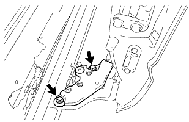 |
Attach the sliding door fully open stop lock ASSY No.1 LH with two bolts.
| 19. Power sliding door sensor Assisted |
| 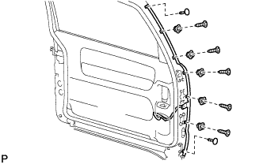 |
Attach the power sliding door sensor ASSY LH with 5 screws and two clips.
Attach the cable clamp.
| 20. Power slide door lock Assy No.1 LH installation |
Apply a body grease to the sliding part of the power slide door lock Assy No.1 LH.
Tighten the three screws with the Torxket wrench (T30).
Attach the power slide door lock Assy No.1 LH with bolts.
Connect three cables clamps.
| 21. Fronted astiffna cushion No.2 mounting |
Attach the front door Stiffuna cotion No.2 with bolts.
| 22. Fronted arocimote control Assigned |
Attach the clamp and attach three bolts to attach the front door lock remote control ASSY LH to the module ASSY.
| 23. Fronted arock actuator assessed |
| 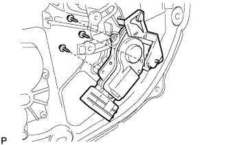 |
With three screws, attach the front door lock actuator Assy LH to the module asser.
| 24. Previous front door inside handle SUB-ASSY LH installation |
 |
Connect two links.
With two bolts, attach the front door inside handle LH to the module ASSY.
| 25. Automatic door regulator motor ASSY installation |
| 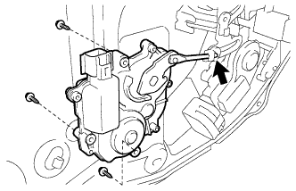 |
Connect the output lever and attach the automatic door regulator motor ASSY to the module ASSY with three new screws.
| 26. Front door window regulator SUB-ASSY LH installation |
 |
Attach the front door window regulator LH to the module ASSY with two bolts.
| 27. Sliding door halfstop control lever LH installation |
Combine the claws and attach the sliding door halfstop control lever to the module ASSY.
| 28. Power window regulator motor Assisted |
 |
Use a torxo wrench (T25) to attach a power window regulator motor ASSY LH to the module ASSY with three screws.
| 29. Module ASSY installation (no smart key) |
 |
Attach the module ASSY with 11 bolts.
Connect the connector of each cable.
| 30. Module ASSY installation (with smart keys) |
 |
Attach the module ASSY with nine bolts.
Connect the connector of each cable.
| 31. Installation of door electrical key osciller (with smart keys) |
| 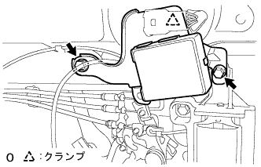 |
Attach the door electrical oscillator key with two bolts.
Attach the clamp.
| 32. Dore control relay installation |
| 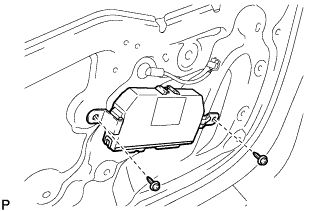 |
Attach the door control relay with two screws.
| 33. Slide door glass No.1 LH installation |
 |
Slide door glass No.1 LH is mixed with the bracket of the front door window regulator LH and tighten with two bolts.
Attach the plug hole.
| 34. Slide door window guide, FR LH installation |
 |
Attach the slide door window guide FR LH with two nuts and one bolt.
| 35. Slide door glass run No.1 LH installation |
| 36. Slide door service hall cover installation |
Paste the butyl tape on the body side.
Paste the new sliding door service hall cover.
| 37. Previous front door wire LH installation (no smart key) |
| 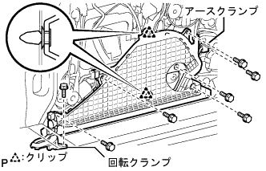 |
Attach the front door wire LH with two clips and 5 bolts.
Attach the rotating clamp part with one bolt.
Attach the earth clamp with one bolt.
| 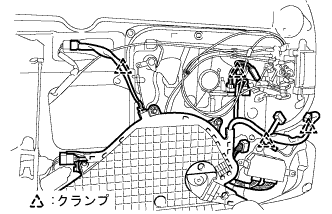 |
Connect each connector and each clamp.
| 38. Front door wire LH installation (with smart key) |
Attach the front door wire LH with two clips and 5 bolts.
Attach the rotating clamps with bolts.
Attach the earth clamp with bolts.
| 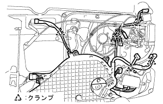 |
Connect each connector and each clamp.
| 39. Previews with front door glass Otowauze Strip Clip |
| 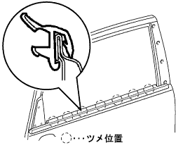 |
Push in from the top, match the claws, and attach the front door glassu outret accompaniment Assembly Out LH.
| 40. Front door glass Weather strip Inn LH installation |
Combine the nine claws and attach the front door glass weather strip INN LH to the front door trimboard LH.
| 41. Front door trim board SUB-ASSY LH installation |
Combine 11 clips and attach the front door trim board LH with one screw.
| 42. Door frame garnish LH installation |
| 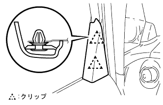 |
Combine the two clips and attach the door frame garnish LH.
| 43. Multiplex network switch ASSY installation |
 |
Combine the two claws and attach multiplex network switch ASSY to the front armrest base panel UPR RH.
Connect the connector, match the two claws, and attach a multiplex network switch Ass, along with the front armrest base panel UPR RH.
| 44. Deck side trim cover FR LH installation |
 |
Push the clip and claws to the rear of the vehicle, and attach the deck child trim cover FR LH.
| 45. Front doorskuff plate LH installation |
 |
Insert the claws at the front door scuff plate LH front end.
Match the claws and clips and attach the front door scuff plate LH.
| 46. Reardoor window frame molding FR LH installation |
Vehicle mounting face cleaning (when using a solvent)
Put the protective tape on the whole acrylic form tape in the body.
Use a polybera or dash to apply the remover bond 7 to the acrylic form tape remaining in the body.
Warm the acrylic form tape remaining in the body with an infrared lamp.
Shave the acrylic form tape remaining in the body using a polybera.
Apply the remover bond 7 to the acrylic form tape remaining in the body.
Warm the acrylic form tape remaining in the body with an infrared lamp.
Rub the acrylic form tape remaining in the body with a rag.
Vehicle mounting face cleaning (when using a tape re -move disk)
Put the protective tape full of the acrylic form tape remaining in the body.
Set 8 disks on the holder and attach the remover disk to the air drill or electric drill.
Put on protective glasses and cut off the acrylic form tape.
Clean the adhesive surface with white gasoline.
Reard and window frame molding FR LH installation
 |
Combine the five clips and attach a new rear window frame molding FR LH with acrylic form tape.
| 47. Reardoors window frame molding RR LH installation |
Vehicle mounting face cleaning
Reard and window frame molding RR LH installation
 |
Remove the release of the acrylic form tape, match the four clips, and attach the sliding door window frame molding RR LH.
| 48. |
| 49. Power slide door set |
When the cross is separated, the slide door slide door is fully closed once.
| 50. Reset the power window reorager motor |
Reduce the glass switch of each seat (maintained Manual Down or Auto Down) to lower the glass of 1/4 or more.
After the window switch of each seat is UP (AUTO UP), the switch is kept for more than one second after the glass stops.
| 51. Power window operation inspection |
reference